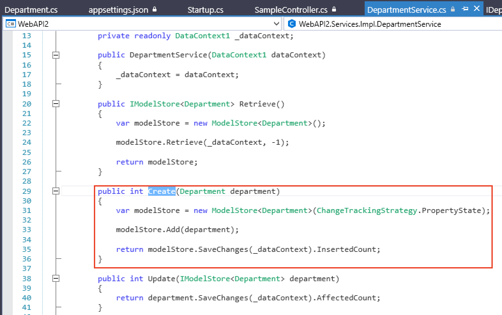

[TOC]
Create a Web API with C# ModelStore
This tutorial demonstrates the basics of creating, in SnapDevelop, a Web API with ASP.NET Core that will use C# ModelStore as its data manipulation component.
In this tutorial, you will learn to:
- Create a Web API project
- Test the API
- Add a database context
- Register the database context
- Add a C# ModelStore Model
- Add a Service
- Perform CRUD operations using the Web API
- Call the Web API from PowerBuilder.
Prerequisites
- SnapDevelop 1.0
- Sample database setup
- Download the database backup file from https://github.com/Microsoft/sql-server-samples/releases/download/adventureworks/AdventureWorks2012.bak.
- Install SQL Server Express or SQL Server if it is not installed.
- Restore database using the downloaded database backup file.
Create a Web API project
Start SnapDevelop and select Create New Project from the Start page. Or, from the File menu, select New and then Project....
In the New Project dialog, select .NET Core, and in the list of project templates, select ASP.NET Core Web API. Name the project "WebAPI2", name the solution "WebAPI MS Tutorial" and click Ok.
Test the Web API
The project template creates a sample Web API. Call the GET HTTP verb from a browser to test the app.
Press Ctrl+F5 to run the app. SnapDevelop launches a browser and navigates to http://localhost:5000/api/sample.
If it's the first time to run you may need to wait several seconds for initiating .NET runtime after the browser launched.
The following JSON is returned:
["value1","value2"]
Add a database context
The database context is the class that manages database connections and transactions. This class is created by deriving from the SnapObjects.Data.DataContext class.
Right-click the *WebAPI12 project and select Add > New Item.... In the item template list select DataContext and Name the class DataContext1.cs and click OK.
In the DataContext Wizard dialog, click New Connection.

In the Connection Properties dialog, fill in database connection information and click OK.

Then back to the DataContext Wizard dialog, Connection String is generated by the Connection Properties dialog, click OK.
The Connection String is saved in appsettings.json and the DataContext1 class is created.
Register the database context
In ASP.NET Core, services such as the DataContext must be registered with the dependency injection (DI) container. The container provides the service to controllers.
Update Startup.cs according to the comments:
// Uncomment the following line to connect to the SQL server database.
// Note: Replace "ContextName" with the configured context name; replace "key" with the database connection name that exists in appsettings.json. The sample code is as follows:
services.AddDataContext<DataContext1>(m => m.UseSqlServer(Configuration["ConnectionStrings:AdventureWorks2012"]));
Add a C# ModelStore Model
The C# ModelStore is a data manipulation component that can be used in place of the C# DataStore. It constructs data storage structures and defines data operations using Model Attributes. And it can be created and maintained using any C# IDE or even a simple text editor.
Create a C# ModelStore Model
Right-click on the Web API project. Click Add > New Folder. Name it Models. Then right-click on the new folder and click Add > New Item.
On the popup window select Class and name it Department.cs and click Ok.
The Model Attributes specify the database tables the model class will be mapped to, as well as its mapping conditions. The Model Properties are the mappings to each individual column from the table. Add these Model Attributes and properties to your ModelStore.
Add a Service
The interface contains only the declaration of the methods, properties and events, but not the implementation.
Right-click on the Web API Project. Then click Add > New Folder. Name it Services. Now add a sub-folder to it and name it Impl. Next, Right-click on that folder and click on Add > Interface.
Name it as IDepartmentService.cs and click Ok.

Add the declaration of the methods we will implement on the service.
To add the Service right-click on the Service > Impl sub-folder and click on Add > Class. Name it DepartmentService.cs and click Ok. (Notice the difference between the name of the interface "IDepartmentService.cs" and the name of the service "DepartmentService.cs")
In ASP.NET Core, services such as the DepartmentService must be registered with the dependency injection (DI) container. The container provides the service to controllers.
Update Startup.cs according to the comments:
// The service needs to be registered in the ConfigureServices method of the Startup class. Sample code as follows:
// services.AddScoped<IDepartmentService1Service, DepartmentService1Service>();
services.AddScoped<IDepartmentService1Service, DepartmentService1Service>();
Perform CRUD operations using the Web API
Since the C# ModelStore and PowerBuilder's DataStore are very similar, you perform CRUD operations in a similar way as you do in the Web API.
The Web API requires one more component called Controller. This component was created when we created the Web API project. A controller determines what response to send back to a user when a user makes a browser request.
Retrieve the C# ModelStore
To retrieve data from the C# ModelStore we will use the Retrieve() method declared in the Interface.
Retrieve() method in the Service
Create an instance of ModelStore using specified Data Model, then call the ModelStore's Retrieve method to retrieve data.
Retrieve() method in the Controller
The Retrieve() method is called by the client using the HTTP verb GET. It returns the retrieved rows in JSON format.
The project template creates a sample Web API and we have added a retrieve method. Press Ctrl+F5 to run the app. SnapDevelop launches a browser and navigates to http://localhost:5000/api/sample/retrieve.
The following JSON is returned:
[{"departmentId":1,"name":"Engineering","groupName":"Research and Development","modifiedDate":"2008-04-30T00:00:00"},{"departmentId":2,"name":"Tool Design","groupName":"Research and Development","modifiedDate":"2008-04-30T00:00:00"},{"departmentId":3,"name":"Sales","groupName":"Sales and Marketing","modifiedDate":"2008-04-30T00:00:00"},{"departmentId":4,"name":"Marketing","groupName":"Sales and Marketing","modifiedDate":"2008-04-30T00:00:00"},{"departmentId":5,"name":"Purchasing","groupName":"Inventory Management","modifiedDate":"2008-04-30T00:00:00"},{"departmentId":6,"name":"Research and Development","groupName":"Research and Development","modifiedDate":"2008-04-30T00:00:00"},{"departmentId":7,"name":"Production","groupName":"Manufacturing","modifiedDate":"2008-04-30T00:00:00"},{"departmentId":8,"name":"Production Control","groupName":"Manufacturing","modifiedDate":"2008-04-30T00:00:00"},{"departmentId":9,"name":"Human Resources","groupName":"Executive General and Administration","modifiedDate":"2008-04-30T00:00:00"},{"departmentId":10,"name":"Finance","groupName":"Executive General and Administration","modifiedDate":"2008-04-30T00:00:00"},{"departmentId":11,"name":"Information Services","groupName":"Executive General and Administration","modifiedDate":"2008-04-30T00:00:00"},{"departmentId":12,"name":"Document Control","groupName":"Quality Assurance","modifiedDate":"2008-04-30T00:00:00"},{"departmentId":13,"name":"Quality Assurance","groupName":"Quality Assurance","modifiedDate":"2008-04-30T00:00:00"},{"departmentId":14,"name":"Facilities and Maintenance","groupName":"Executive General and Administration","modifiedDate":"2008-04-30T00:00:00"},{"departmentId":15,"name":"Shipping and Receiving","groupName":"Inventory Management","modifiedDate":"2008-04-30T00:00:00"},{"departmentId":16,"name":"Executive","groupName":"Executive General and Administration","modifiedDate":"2008-04-30T00:00:00"}]
Create/Insert a new row into the C# ModelStore
To insert data into the C# ModelStore we will use the Create() method declared in the Interface.
Create() method in the Service
Create an instance of ModelStore using specified Data Model, then call the ModelStore's Add() method passing in the rows in JSON format. Call the SaveChanges() method of the ModelStore and return the count of Inserted Rows.

Create() method in the Controller
The Create() method is called by the client using the HTTP verb POST. It accepts a JSON string that corresponds to the actual department table to create, and produces a response type 201 with the url of the retrieveone method and the new department. If an internal server error occurred it produces a response type 500.
The project template creates a sample Web API and we have added a create method. Press Ctrl+F5 to run the app. SnapDevelop launches a browser and navigates to http://localhost:5000/api/sample.
To consume this method of the Web API, change the url: http://localhost:5000/api/smaple/create and call it with your client application passing in the body of the request the JSON containing the row you want to Create/Insert. (To learn how to call this method from PowerBuilder, refer to the following tutorial: Call the Web API from PowerBuilder)
Update changes into the C# ModelStore
To insert data into the C# ModelStore we will use the Update() method declared in the Interface.
Update() method in the Service
Recieve, in JSON format, the rows to update. Call the SaveChanges() method of the Model Store and return the count of affected rows.
Update() method in the Controller
The Update() method is called by the client using the HTTP verb POST. It accepts a JSON string with the rows that correspond to the actual department table to update. Calls the Update() method of the service catching any posible erros. Then produces a response type 201 if the update was successful. If an internal server error occurred it produces a response type 500.
The project template creates a sample Web API and we have added an update method. Press Ctrl+F5 to run the app. SnapDevelop launches a browser and navigates to http://localhost:5000/api/sample.
To consume this method of the Web API, change the url: http://localhost:5000/api/smaple/update and call it with your client application passing in the JSON containing the rows you want to Update. (To learn how to call this method from PowerBuilder, refer to the following tutorial: Call the Web API from PowerBuilder)
Delete changes from the C# ModelStore
To delete data from the C# ModelStore we will use the Delete() method declared in the Interface.
Delete() method in the Service
Create an instance of ModelStore by using the Department Model and the data contex. Retrieve the ModelStore using the recieved id and use the RemoveAt() method of the ModelStore to delete the row. Save the changes and return the deleted count..
Delete() method in the Controller
The Delete() method is called by the client using the HTTP verb DELETE. It accepts an integer value that corresponds to the actual department id to delete, and produces a response type 201 if the delete was successful. If an internal server error occurred it produces a response type 500.
The project template creates a sample Web API and we have added a delete method. Press Ctrl+F5 to run the app. SnapDevelop launches a browser and navigates to http://localhost:5000/api/sample/retrieveone/1.
To consume this method of the Web API, change the url: http://localhost:5000/api/smaple/delete/ and call it with your client application passing in the department id you want to delete. (To learn how to call this method from PowerBuilder, refer to the following tutorial: Call the Web API from PowerBuilder)
Call the Web API from PowerBuilder
Start PowerBuilder and create a template application with no database connection. Then add a new Grid DataWindow, using the DataWindow Designer, that maps to the table: HumanResources.Department. Add a retrieval argument named departmentId that will be used in the SQL WHERE clause to filter by DepartmentID. Save the DataObject with the name d_department.
Add the JSON DataWindow
A JSON DataWindow is a traditional DataWindow that has a Web API as its DataSource. You use the same functionalities on the client-side, but the data manipulation is done on the Web API server-side.
Add the JSON DataWindow to your Window. And add a button for each CRUD operation.
Retrieve the JSON DataWindow
The RESTClient object provides the ability to access the RESTful Web APIs. It loads the JSON-formatted string returned from the RESTful Web Service APIs into the DataWindow object. The JSON string returned from the RESTFul Web Service APIs must have no more than 2 levels, and the top-level must be arrays, the second-level must be objects.
To Retrieve a JSON DataWindow you first need to instantiate the RESTClient object. Add an instance variable of the RESTClient object.
RESTClient inv_RestClient
On the Open event of your window, create the object variable.
// Create the RESTClient object variable
inv_RestClient = CREATE RESTClient
// Set the Request Headers to accept GZIP compression
inv_RestClient.SetRequestHeader("Accept-Encoding", "gzip")
On the source code window of your Retrieve button, add the RESTClient.Retrieve() function to call your Web API and load it directly into your DataWindow.
// Retrieve the DW using the RESTClient
inv_RestClient.RetrieveOne(dw_department, "http://localhost:5000/api/sample/retrieveone/1")
Run your application. Press Ctrl+R. Click on the Retrieve button. (Note: Your Web API needs to be running)
Insert/Update and Delete data using the Web API
On the source code window of your Insert/Update and Delete buttons, add the RESTClient.Submit() function to call your Web API and load it directly into your DataWindow. The Submit function calls the Web API using the HTTP verb POST. It automatically exports the DataWindow JSON, as well as all of it's Buffers, and sends only the changed rows to the Web API.
The SendDeleteRequest function calls the Web API using the HTTP verb DELETE. You can also send your JSON data in the body of the request or you can send individual arguments on the URL.
Insert
// Insert data into the JSON DataWindow with the RESTClient
inv_RestClient.Submit("http://localhost:5000/api/sample/create", ls_response, dw_department)
Update
// Update data from the JSON DataWindow with the RESTClient
inv_RestClient.Submit("http://localhost:5000/api/sample/update", ls_response, dw_department)
Delete
// Delete data from the JSON DataWindow with the RESTClient
li_rtn = inv_RestClient.SendDeleteRequest("http://localhost:5000/api/sample/delete/" + li_dep_id, ls_response)
// Check if the delete was successful by looking into the Return code of the RESTClient
IF li_rtn <> 1 THEN
// Rest of your code....
Run your application. Press Ctrl+R. Click on the Retrieve button. (Note: Your Web API needs to be running)